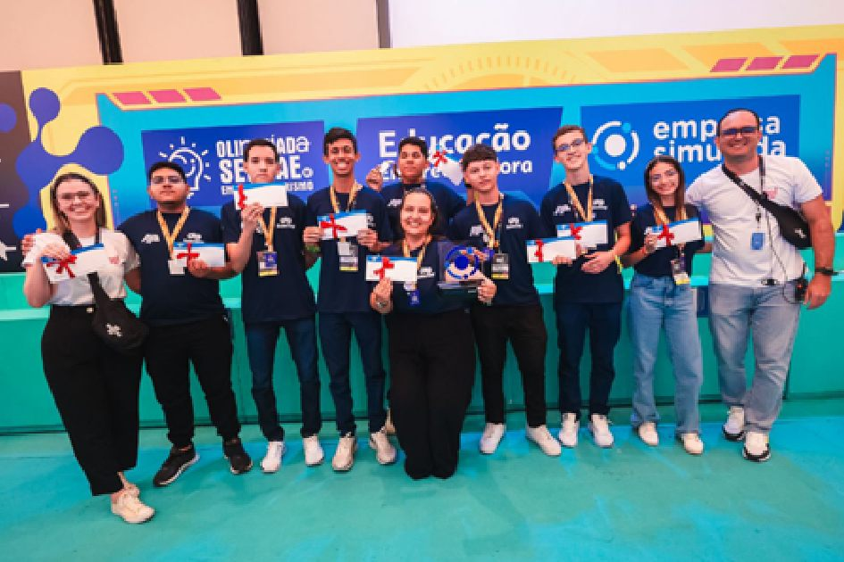
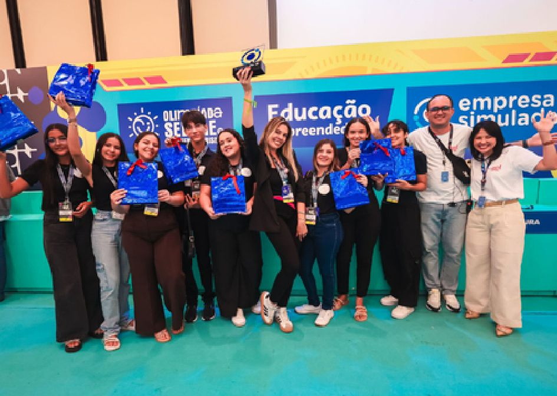
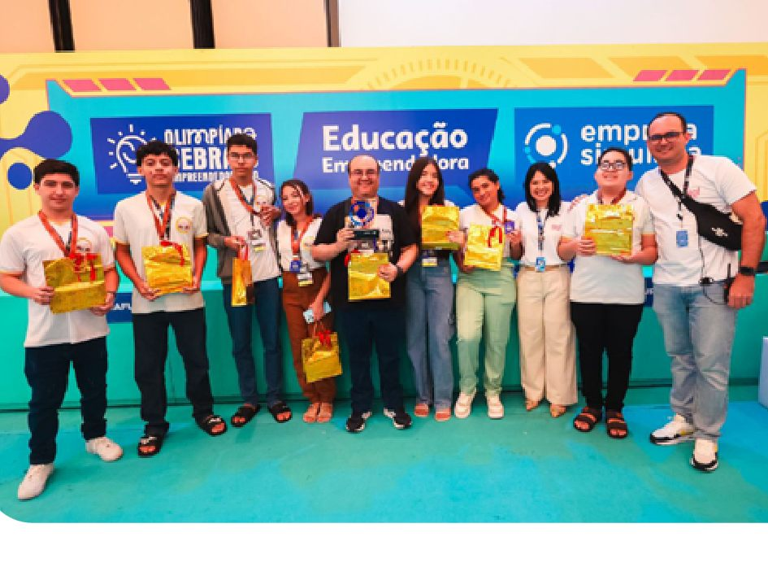
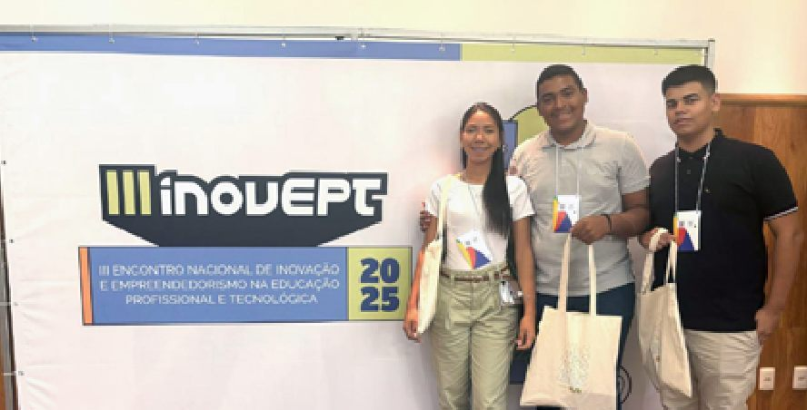
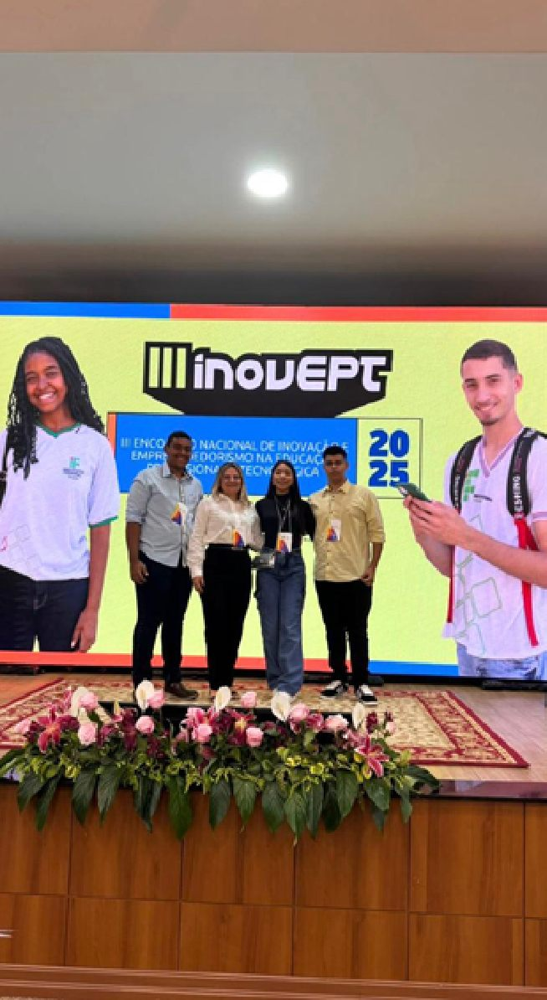
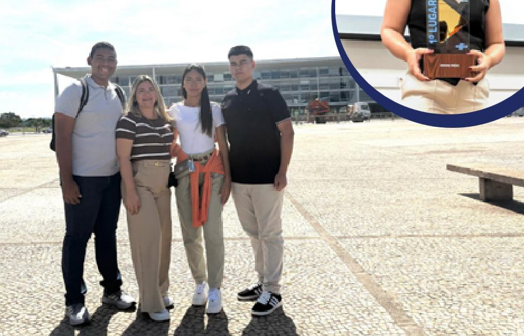

1º lugar
Game Shop
Professora orientadora: Amanda Cristina Dantas
EETI Professor Francisco VerasRelatos e experiências das escolas, CEEPs e IERNs: projetos que nasceram em sala de aula e foram premiados, programas que abriram portas para o trabalho e as vozes de quem vive a EPT.

Na olimpíada, estudantes criam empresas simuladas, apresentam suas ideias e aprendem a transformar um projeto em negócio. A rede estadual mobilizou:
Professora orientadora: Amanda Cristina Dantas
EETI Professor Francisco Veras
Professora orientadora: Williany Marillac da Nóbrega
EE Senador José Bernardo
Professor orientador: Antônio Junior Batista
EE Waldemiro Pedro VianaA Escola Estadual Severiano Melo inscreveu três projetos no Desafio Liga Jovem, do Sebrae. Um deles, o NatureGuard Bov, pesquisa as propriedades da babosa, da própolis e do cravo-da-índia. Foi finalista estadual logo na primeira participação da escola.
O grupo venceu a etapa estadual na categoria Ensino Profissional e foi a Brasília representar o RN no III Inovept, o Encontro Nacional de Inovação e Empreendedorismo na EPT, em 2025. A professora Mayara Medeiros também ficou em 1º lugar no concurso de vídeos “Lições que Inspiram”, do Sebrae.
“Se você viver o processo com intensidade, com amor, com dedicação, certamente os frutos serão colhidos.”Prof.ª Mayara Medeiros, Escola Estadual Severiano Melo



Desde o segundo semestre de 2024, o programa leva a aprendizagem profissional às escolas, com contratos de trabalho regidos pela CLT: experiência real, com direitos garantidos.
Para ampliar o programa, a SUEP articula empresas, o Ministério do Trabalho e Emprego, agentes de integração e outros setores do governo estadual.
“O curso técnico impacta diretamente na sua vida — mas você tem de saber usar o que tem em mãos. Hoje, estou estudando e trabalhando na área.”
“Quando a gente vê essa questão das plenárias, a gente vê uma coisa diferente: a escuta da comunidade, a escuta do mercado de trabalho. Para a comunidade, foi uma coisa nova: a escolha do curso.”
Projetos integradores, parcerias, prêmios e histórias de estudantes: envie um relato curto com fotos para a SUEP. As boas práticas da rede podem aparecer aqui.